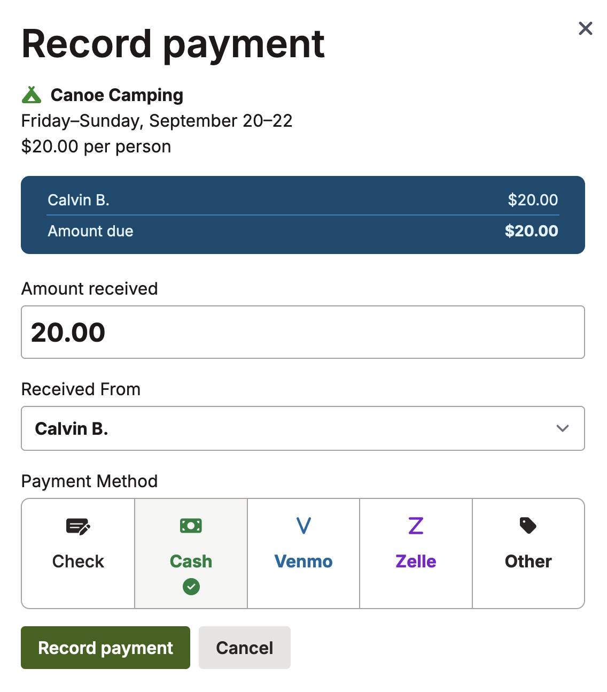

Recording payments
When you ask your members to pay for events, you can record their payments in Scoutplan. This helps you keep track of who has paid and who hasn’t. It also helps you see how much money you’ve collected and how much you’re still waiting for. Payment recording only applies to events that have a cost associated with them. If you’re not charging for an event, you don’t need to record payments.
To get started, set a cost for your event:
- Navigate to the event you want to record payments for.
- Click the (…) menu in the top right corner, then click Event settings.
- Turn on the Requires RSVP switch.
- Enter youth and adult costs.
- Click Save Changes.
You’ll be returned to the event page. From here:
- Click the See all RSVPs button.
- In the leftmost Accepted column, you’ll see a list of everyone who’s planning to attend.
-
Next to each name you’ll see a triangle exclamation mark icon. Click the icon to view the Record Payment screen:

- Enter the amount paid, who you received it from, and the payment method.
- Click Record Payment.